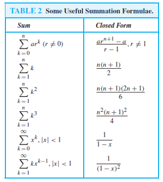
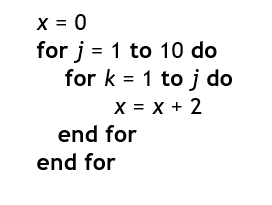
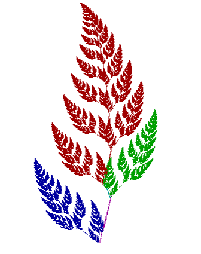
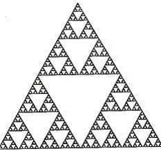
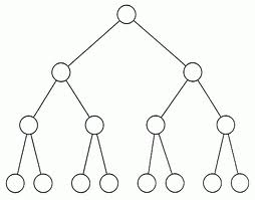
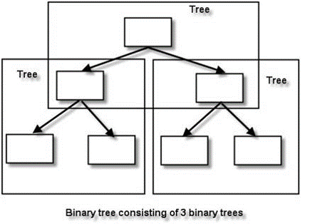
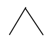
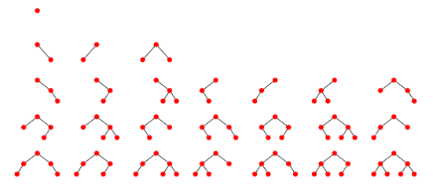

Deretan Dan Rekursi#
Deretan (sequence)#
Deretan adalah suatu urutan atau susunan elemen atau objek yang disusun secara teratur berdasarkan suatu aturan tertentu. Elemen dalam deretan biasanya berupa angka, huruf, simbol, atau objek lainnya, dan urutannya dapat didasarkan pada pola, nilai, atau hubungan tertentu
Definisi: Sebuah deretan adalah fungsi dari subset suatu himpunan bilangan bulat (biasanya N atau P) ke sebuah himpunan S.
N = {1, 2, 3, 4, … } S misalnya {2, 4, 6, 8, …}, {1/3, 1/5, 1/7, …}, dsb
Notasi deretan: {\(a_n\)} Deretan umumnya dinyatakan dalam suatu formula, misalnya: \(a_n = 2n\) \(a_n = 1/n\) \(a_n = 7 – 3n\)
Dalam konteks matematika, deretan sering merujuk pada barisan bilangan, yaitu kumpulan bilangan yang disusun dalam suatu pola tertentu. Misalnya:
Deretan bilangan ganjil: 1,3,5,7,…
Deretan bilangan genap: 2,4,6,8,…
Deretan bilangan yang membentuk deret aritmetika: 3,6,9,12….
Contoh-contoh deretan dan formulanya:
Deret Aritmetika Deret dengan pola kenaikan atau penurunan tetap.
Contoh: 2,5,8,11,14,…
Rumus suku ke-n: \(𝑈_𝑛=𝑎+(𝑛−1)⋅𝑏\)
Di mana:
\(𝑎\): suku pertama
\(𝑏\): beda (selisih antar suku
\(𝑛\): nomor suku yang dicari
Deret Geometri Deret dengan pola kelipatan tetap. Contoh: 3,6,12,24,48,… Rumus suku ke-n: \(𝑈_𝑛=𝑎⋅𝑟\)^(𝑛−1)^
Di mana:
\(𝑎\): suku pertama
\(𝑟\): rasio (perbandingan antar suku,
\(𝑛\): nomor suku yang dicari
Deret Bilangan Kuadrat Deret dengan pola nilai berupa kuadrat bilangan bulat.
Contoh: 1,4,9,16,25,…
Rumus suku ke-n: \(𝑈_𝑛=𝑛^2\)
Deret Bilangan Kubik Deret dengan pola nilai berupa kubik bilangan bulat.
Contoh: 1,8,27,64,125,…
Rumus suku ke-n: \(𝑈_𝑛=𝑛^3\)
Deret Fibonacci Deret dengan pola di mana setiap suku merupakan jumlah dua suku sebelumnya.
Contoh: 0,1,1,2,3,5,8,…
Rumus suku ke-n (rekursif): \(𝐹_𝑛=𝐹_(𝑛−1)+𝐹_(𝑛−2),𝐹_0=0,𝐹_1=1\)
String adalah deretan berhingga karakter berbentuk \(a_1a_2a_3a_4…a_n\)
Panjang string S adalah jumlah karakter di dalam string tersebut
Contoh: informatika adalah string dengan panjang 11 karakter 10100101 adalah string biner dengan panjang 8 bit
String kosong dilambangkan dengan \(λ\), panjangnya = 0
Penjumlahan deretan#
Jumlah deretan \(a_m, a_m+1, a_m+2, …, a_n\) adalah \(a_m + a_m+1 + a_m+2 + … + a_n\) atau dalam notasi sumasi: \(\sum_{k=m}^{n} a_k\)
\(k\) adalah indeks summasi,
\(m\) adalah batas bawah indeks,
\(n\) adalah batas atas indeks
Contoh 2: Berapa nilai \(\sum_{k=1}^{5} k^2\) ? Jawaban:
\(\sum_{k=1}^{5} k^2 = 1^2 + 2^2 + 3^2 + 4^2 + 5^2 = 1 + 4 + 9 + 16 + 25 = 55\)
Contoh 3: Batas bawah sumasi kadangkala perlu digeser agar dapat dijumlahkan dengan sumasi lain yang memiliki batas bawah berbeda. Pada contoh 2 di atas batas bawah digeser dari 1 menjadi 0, akibatnya:
\(\sum_{k=1}^{5} k^2 = \sum_{k=0}^{4} (k+1)^2\)
Contoh 4: Sumasi dapat dipecah dengan membagi dua indeksnya, misalnya
\(\sum_{k=1}^{100} k^2 = \sum_{k=1}^{49} k^2 + \sum_{k=50}^{100} k^2\)
TUGAS PEMBUKTIAN Dari 3 rumus dibawah
Beberapa sumasi sudah ditemukan rumus penjumlahannya sebagai berikut:

Deret geometri Deret aritmetika
Contoh 5: Hitung nilai \(\sum_{k=50}^{100} k^2\) Jawaban:
\(\sum_{k=1}^{100} k^2 = \sum_{k=1}^{49} k^2 - \sum_{k=50}^{100} k^2\)
\(\sum_{k=50}^{100} k^2 = \sum_{k=1}^{100} k^2 - \sum_{k=1}^{49} k^2\)
Gunakan rumus: \(\sum_{k=1}^n k^2 = \frac{n(n+1)(2n+1)}{6},:\)
\(\sum_{k=50}^{100} k^2 = \frac{100 \cdot 101 \cdot 201}{6} - \frac{49 \cdot 50 \cdot 99}{6} = 338,350 - 40,425 = 297,925\)
Sumasi ganda#
Di dalam algoritma, kita perlu menghitung berapa kali suatu operasi tertentu dilakukan di dalam sebuah kalang bersarang (nested loop). Penjumlahan semua operasi di dalam kalang bersarang dinyatakan dalam bentuk sumasi ganda.
Contoh: \(\sum_{i=1}^{4} \sum_{j=1}^{3} ij\)
Untuk menghitung sumasi ganda, mula-mula ekspansi sumasi terdalam, lalu dilanjukan dengan sumasi terluar:
\(\sum_{i=1}^{4} \sum_{j=1}^{3} ij = \sum_{i=1}^{4} (i + 2i + 3i) = \sum_{i=1}^{4} 6i = 6 + 12 + 18 + 24 = 60\)
Contoh penggunaan: Berapa kali operasi + dilakukan di dalam algoritma di bawah ini?

Penyelesaian: Operasi + terdapat di dalam pernyataan x = x + 2 Operasi ini dilakukan satu kali pada setiap pengulangan Jumlah seluruh operasi + adalah:\(t=\sum_{j=1}^{10}\sum_{k=1}^{j}1\)
\(=\sum_{k=1}^{10}\)\((1+1+...+1 \text{ Sebanyak j kali })\)
\(=\sum_{k=1}^{10}j\)
\(=\frac{10(10+1)}{2}=55\)
Latihan:
Tentukan nilai \(\sum_{k=1}^8 2^k + \sum_{k=2}^8 (-3)^k\)
Tentukan nilai \(\sum_{i=0}^2 \sum_{j=0}^3 (2i + 3j)\)
Tentukan nilai \(\sum_{i=0}^3 \sum_{j=0}^2 i\)
Rekursi#
Sebuah objek dikatakan rekursif (recursive) jika ia didefinisikan dalam terminologi dirinya sendiri.
Proses mendefinisikan objek dalam terminologi dirinya sendiri disebut rekursi (recursion).
Perhatikan tiga buah gambar pada tiga slide berikut ini.
Objek fraktal adalah contoh bentuk rekursif.


Fungsi Rekursif#
Fungsi rekursif didefinisikan oleh dua bagian:
(i) Basis
Bagian yang berisi nilai fungsi yang terdefinisi secara eksplisit.
Bagian ini juga sekaligus menghentikan rekursif (dan memberikan sebuah nilai yang terdefinisi pada fungsi rekursif).
(ii) Rekurens
Bagian ini mendefinisikan fungsi dalam terminologi dirinya sendiri.
Berisi kaidah untuk menemukan nilai fungsi pada suatu input dari nilai-nilai lainnya pada input yang lebih kecil.
Contoh 6: Misalkan f didefinsikan secara rekusif sbb \(f(n)= \begin{cases} 3 & \text{,} n = 0, \\ 2f(n-1)+4 & \text{,} n > 0. \end{cases}\)
Basis rekurens Tentukan nilai f(4)!
Solusi: f(4) = 2f(3) + 4
= 2(2f(2) + 4) + 4
= 2(2(2f(1) + 4) + 4) + 4
= 2(2(2(2f(0) + 4) + 4) + 4) + 4
= 2(2(2(2.3 + 4) + 4) + 4) + 4
= 2(2(2(10) + 4) + 4) + 4
= 2(2(24) + 4) + 4
= 2(52) + 4
= 108
Cara lain menghitungnya:
f(0) = 3
f(1) = 2f(0) + 4 = 2 . 3 + 4 = 10
f(2) = 2f(1) + 4 = 2 . 10 + 4 = 24
f(3) = 2f(2) + 4 = 2 . 24 + 4 = 52
f(4) = 2f(3) + 4 = 2 . 52 + 4 = 108
Jadi, f(4) = 108.
Contoh 7: Nyatakan \(n!\) dalam definisi rekursif Solusi: \(n! = \underbrace{1 \times 2 \times 3 \times...\times(n-1)} \times n=(n-1)!\times n\)!
Misalkan \(f(n) = n!\), maka \(n!= \begin{cases} 1 & \text{,} n = 0, \\ n \cdot(n-1)! & \text{,} n > 0. \end{cases}\)
Menghitung \(5!\) secara rekursif adalah: \(5! = 5 \cdot 4! = 5 \cdot 4 \cdot 3! = 5 \cdot 4 \cdot 3 \cdot 2!\) \(= 5 \cdot 4 \cdot 3 \cdot 2 \cdot 1! = 5 \cdot 4 \cdot 3 \cdot 2 \cdot 1 \cdot 0! = 5 \cdot 4 \cdot 3 \cdot 2 \cdot 1 \cdot 1 = 120\)
Algoritma menghitung faktorial:#
function Faktorial (input n :integer) \(\to\) integer
{ mengembalikan nilai n!; basis : jika \(n = 0\), maka \(0! = 1\) rekurens: jika \(n > 0\), maka \(n! = n \times(n-1)!\) } DEKLARASI - ALGORITMA: if n = 0 then return 1 { basis } else return n * Faktorial(n – 1) { rekurens } end
Contoh 8: Barisan Fibonacci 0, 1, 1, 2, 3, 5, 8, 11, 19, …. Dapat dinyatakan secara rekursif sebagai berikut: \(f_n = \begin{cases} 0 & ,n = 0 \\ 1 & ,n = 1 \\ f_{n-1} + f_{n-2} &\ ,n > 1 \end{cases}\)
Contoh 9: Fungsi (polinom) Chebyshev dinyatakan sebagai \(T(n, x) = \begin{cases} 1, & \text{jika } n = 0, \\ x, & \text{jika } n = 1, \\ 2x \cdot T(n-1, x) - T(n-2, x), & \text{jika } n > 1. \end{cases}\)
Contoh 10: Sumasi \(\quad \sum_{k=0}^n a_k \quad\)didefinisikan secara rekursif sebagai berikut: \(\sum_{k=0}^n a_k = a_0 + a_1 + a_2 + \ldots + a_{n-1} + a_n\) \(= ((a_0 + a_1 + a_2 + \ldots + a_{n-1}) + a_n)\) \(= \left( \sum_{k=0}^{n-1} a_k \right) + a_n\) sehingga \(\sum_{k=0}^n a_k =\begin{cases} a_0, & n = 0 \\ \sum_{k=0}^{n-1} a_k + a_n, & n > 0 \end{cases}\)
Definisikan an secara rekursif , yang dalam hal ini a adalah bilangan riil tidak-nol dan n adalah bilangan bulat tidak-negatif.
Nyatakan a \(\times\) b secara rekursif, yang dalam hal ini a dan b adalah bilangan bulat positif.
Solusi:
\(a^n = \underbrace{a \cdot a \cdot a \cdot \ldots \cdot a}_{n \text{ kali}} = \underbrace{a \cdot a \cdot a \cdot \ldots \cdot a}_{n-1 \text{ kali}} \cdot a = a \cdot a^{n-1}\) Sehingga:
\(\ a^n = \begin{cases} 1, & n = 0 \\ a \cdot a^{n-1}, & n > 0 \end{cases}\)
\(a \cdot b = \underbrace{b + b + b + \ldots + b}_{a \text{ kali}} = b + \underbrace{b + b + \ldots + b}_{(a-1) \text{ kali}} = b + (a-1)b\) Sehingga: \(a \cdot b = \begin{cases} b, & a = 1 \\ b + (a-1)b, & a > 1 \end{cases}\)
Struktur Rekursif#
Struktur data yang penting dalam komputer adalah pohon biner (binary tree).

Simpul (node) pada pohon biner mempunyai paling banyak dua buah anak.
Jumlah anak pada setiap simpul bisa 1, 2, atau 0.
Simpul yang mempunyai anak disebut simpul cabang (branch node) atau simpul dalam (internal node)
Simpul yang tidak mempunyai anak disebut simpul daun (leave).
Pohon biner adalah struktur yang rekursif, sebab setiap simpul mempunyai cabang yang juga berupa pohon. Setiap cabang disebut upapohon (subtree).

Oleh karena itu, pohon dapat didefinisikan secara rekursif sebagari berikut:
(i) Basis: kosong adalah pohon biner
(ii) Rekurens: Jika \(T_1 \quad T_2 \quad\) adalah pohon biner, maka \(\cdot\) adalah pohon biner \(T_1 \quad T_2 \quad\)

Proses pembentukan pohon biner secara rekursif:
(i) \(\Phi\)
(ii)

Kesimpulan#
Deret adalah hasil penjumlahan dari anggota-anggota dalam barisan tertentu. Barisan adalah daftar bilangan yang disusun secara berurutan dari kiri ke kanan, dengan pola atau karakteristik bilangan tertentu.
Rekursi adalah proses pengulangan sesuatu dengan cara kesamaan-diri. Rekursi merupakan konsep penting dalam pemrograman yang membantu menyelesaikan masalah yang dapat dibagi menjadi submasalah yang lebih kecil.